ตรวจตัวฐานตุ๊กตา
ตัวฐานใหม่สำหรับแนว MMO หน้าตรง หน้าไข่มน รวมเป็นไฟล์เดียว docs/doll-prototype/mmo/base.py แล้ว ด้านล่างมีร่างข้อความที่จะแก้ในสกิลและเอกสาร handover ยังไม่ได้เขียนทับไฟล์จริง รอคุณตรวจก่อน
ขยาย
1. ตัวฐาน
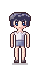
- กรอบ 40x66 ตัวกว้าง 32 สูงราว 3 หัว
- หน้าไข่มน ตา 3x5 ต่ำและชิด ปากจุดเดียว แก้มแดง
- ไม่ปล่อยตัวเปล่า ใส่เสื้อกล้ามกับกางเกงขาสั้นไว้เป็นค่าเริ่มต้น
- มือกลมอยู่ในแนวแขน ไม่บานออก (แก้แล้ว) มีเข่า มีรองเท้าพื้นฐาน
- เงาไล่ 4 เฉด เส้นในอมสีของชิ้น
2. สีผิว 5 แบบ
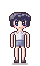

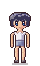
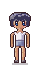
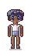
3. สีผม 8 สี × ผมสั้น/ยาว × สีตา

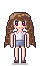
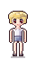
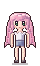
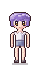
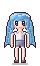
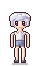
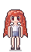
4. ร่างข้อความที่จะแก้ (ยังไม่เขียนทับ)
สกิล rxtu-pixel-doll · หัวข้อ "สไตล์ที่เคาะแล้ว"
~/.claude/skills/…/rxtu-pixel-doll/SKILL.md- พิกเซลอาร์ต ตัวสูงราว 3 หัว ยืนหน้าตรงท่าเดียว ร่างเดียวไม่แยกเพศ - ตัวสูง 36px กว้างราว 14px บนกรอบ 40x44 - ขอบเข้ม 1px + ขอบขาว 2px คำนวณอัตโนมัติจากรูปร่างรวม ห้ามวาดขอบในชิ้น - โทนพาสเทลนุ่ม เข้ากับธีมเว็บ เส้นขอบในตัวใช้ `#3A2E2A` ไม่ใช้ดำสนิท
+ แนว MMO 2D หน้าตรง (เคาะ 18 พ.ย. 2026) ตัวเพรียว ราว 3 หัว ยืนท่าเดียว ร่างเดียวไม่แยกเพศ + กรอบ 40x66 ตัวกว้าง 32 วางที่ x=4 · วาดครึ่งซ้าย 16 คอลัมน์แล้วสะท้อน (แกนระหว่างคอลัมน์ 15|16) + หน้าไข่มน · ตา 3x5 ต่ำและชิด ประกายมุมซ้ายบนทั้งสองข้าง · หน้าม้าลงถึงคิ้ว ปอยข้างแก้ม + เส้นนอก #3A2028 · เส้นในใช้สีเข้มของชิ้นข้างเคียง (คำนวณอัตโนมัติ) · ไม่มีขอบขาวสติกเกอร์แล้ว + เงาไล่ 4 เฉดต่อชิ้น แสงซ้ายบน · ผิวเงาอมชมพู ผ้าเงาอมม่วง · ลาย/ประกายใช้ x X (ไม่ไล่เงา) + ไม่ยึดธีมพาสเทลของเว็บ ชิ้นแต่งได้ทุกแนว ทั้งเท่และเบียว + ของบนหัวและของติดหลังควรสูงราวหัว ให้ดูออกที่ 1× + อ้างอิงการ์ด pixel-art-studio 006 และตัวต้นแบบ docs/doll-prototype/mmo/base.py
เอกสาร handover · หัวข้อ 1 "สิ่งที่ user เคาะแล้ว" ส่วน Avatar
rxtu10-v2/docs/avatar-pharmarble-handover.md- ขอบเข้ม 1px + ขอบขาว 2px รอบตัวแบบโทเค่นบอร์ดเกม คำนวณอัตโนมัติจากรูปร่างรวม - ตัวละครสูง 36px กว้างราว 14px วางบนกรอบ 40x44 (เผื่อปีก หมวกสูง วงแหวน ของในมือ)
+ **18 พ.ย. 2026 เปลี่ยนแนวอาร์ต:** แนว MMO 2D หน้าตรง ตัวเพรียว หน้าไข่มน (ดู docs/doll-prototype/mmo/) + กรอบ 40x66 ตัวกว้าง 32 · เส้นนอกเข้ม เส้นในอมสีชิ้น · ไม่มีขอบขาวสติกเกอร์ + ชิ้นใน doll.js (99 ชิ้น กรอบ 40x44) ใช้ไม่ได้กับแนวใหม่ ต้องวาดใหม่ · โครงช่อง/พาเลต/สะท้อนซ้ายขวาใช้ต่อได้ + ⚠️ บนกระดาน PharMarble (ช่องราว 38px) หมากต้องย่อ หรือครอปครึ่งบน ต้องลองก่อน B3
ช่วยตรวจ 3 อย่าง
- ตัวฐานโอเคไหม (ทรงตัว ขา มือ เสื้อกล้าม/กางเกงขาสั้นเริ่มต้น)
- สีผิว 5 สี และสีผมกับสีตา โอเคไหม หรืออยากเพิ่ม/เปลี่ยนสีไหน
- ร่างข้อความในสกิลกับเอกสาร handover ให้เขียนทับได้เลยไหม